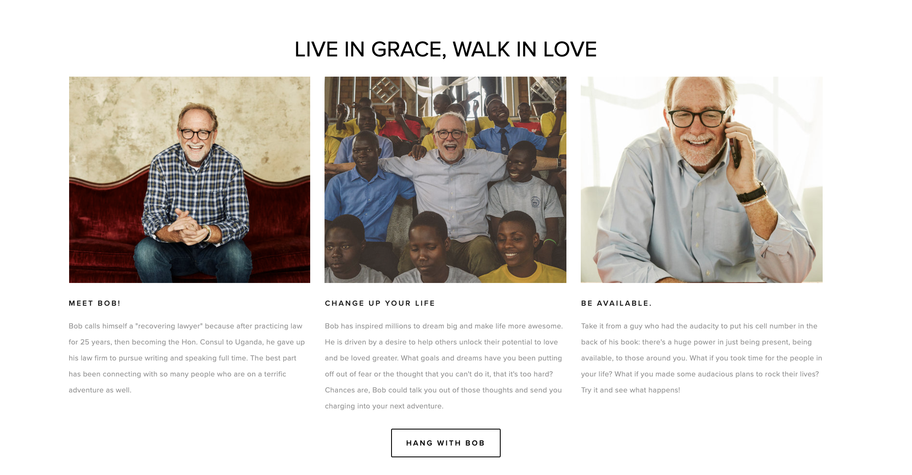
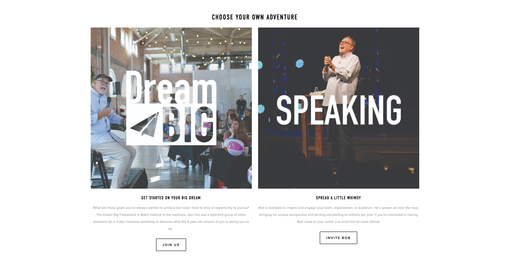
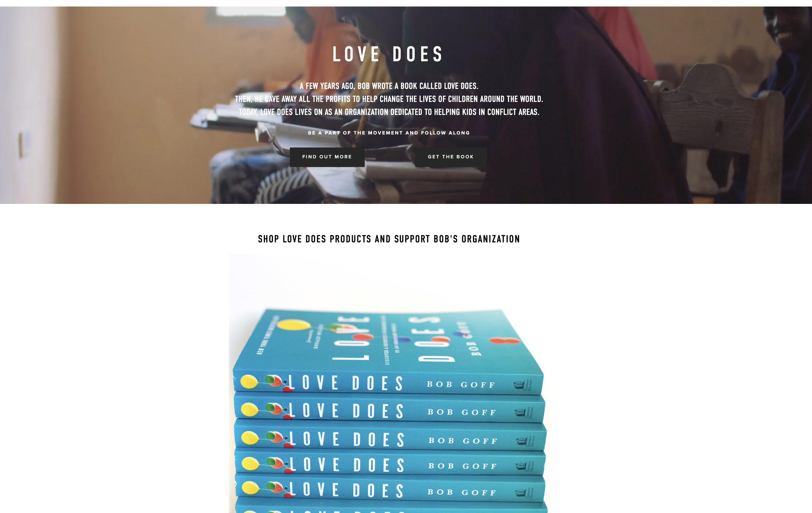
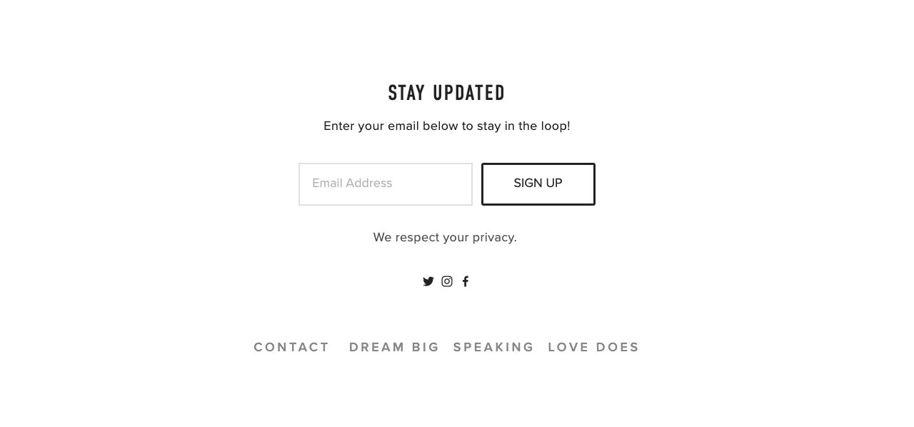
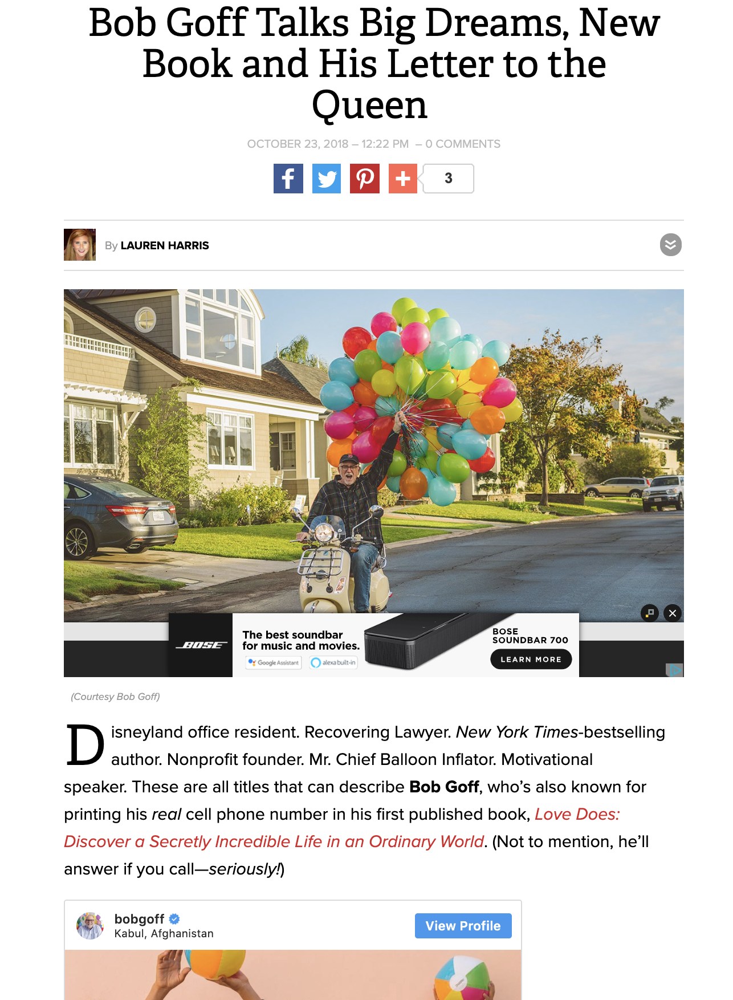
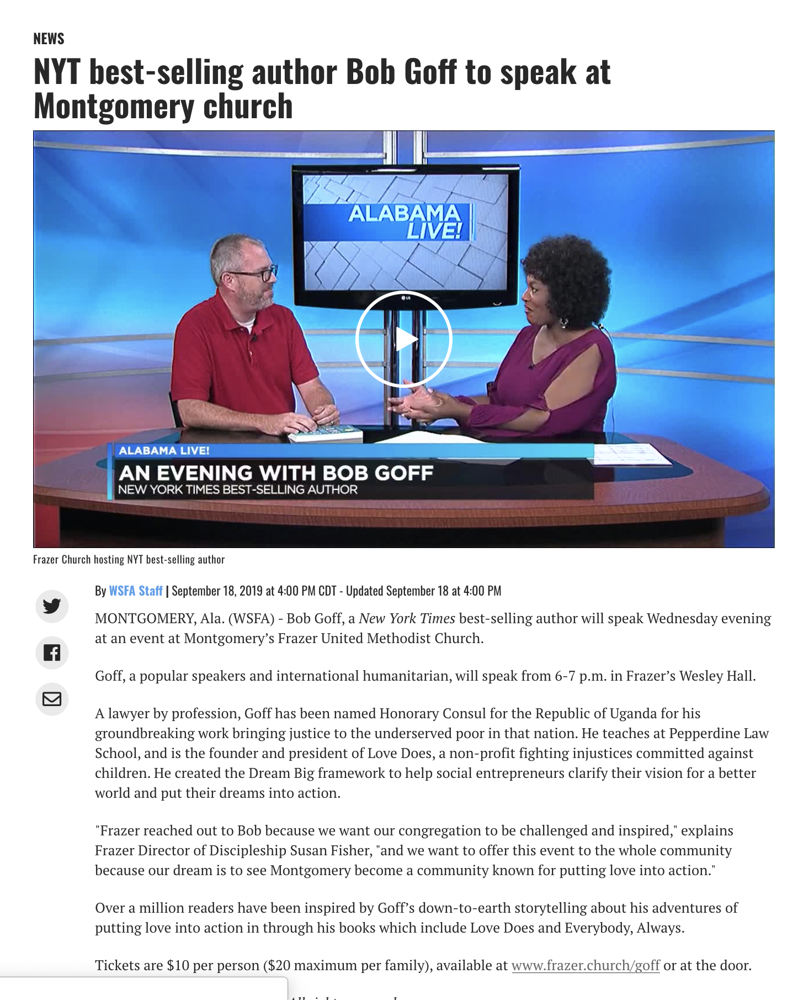

Research
I started conducting primary research on my client Bob Goff, and then secondry research on other organizations similar to Bob Goff's plan.
Primary Client Research
About Bob Goff
Bob Goff's goal and mission is to show people how to love and how to be loved greater. He has written multiple books, created a workshop for entrepreneurs, who want to follow their dreams, and founded a non-profit organization for orphans around the world all because his growing faith in the Lord. He is continously thinking of new ideas on how to make sure people see the gospel.
Bob Goff's Website Research
Banner Sections

When opening his website and coming to his homepage, he has a search bar at the top listing out the seven different pages ranging from his dream big workshop, speaking (how to get Bob Goff to speak at your conference), the team that helps run all the details for Bob Goff's mission, his podcasts, the shop, love does, which is his non-profit organization, and follow, which are all of the social media platforms you can find Bob Goff. This is a lot happening within all this and it is the smallest section of his homepage.
Banner Image

When your eye goes further down the homeoage, the banner image is an extremely enlarged image of Bob Goff with a quote, "Get back to building the rocket ship that was supposed to be your life." Over top of the image there are two call to action bottons that state, "Get Updates" and Hang with Bob." These to bottons are rectangular and a slightly lighter black with white text.
1st Mission Statement

When scrolling down further to explore his page, you find his first “mission statement,” “Live in Grace, Walk in love.” Goff’s design team then lists out three ways you can get connected with this mission statement.
- Meet Bob!
- Change Up Your Life
- Be Available.
Under the section, Meet Bob, he explains a little bit about himself and how he is a “recovering layer” because after practicing law for 25 years, then becoming the Hon. Consul to Uganda, he gave up his law firm to pursue his dream of becoming an influencer writer and speaker. He then says the best part is connecting with so many different kinds of people are their epic journey of life.
Under the section, Change Up Your Life, he explains that he has inspired millions to dream big and make more for their life. He continues by explaining his desire to help people unlock their full potential to love and be loved greater. He then says he can change your mindset and help you begin your next adventure.
Under the section, Be Available, he addresses how he has placed his phone number on the back of all these books because he believes there is power in just being present. He then asks his viewers two questions and then challenges them. “What if you took time for the people in your life? What if you made some audacious plans to rock their lives? Try it and see what happens!”
Under all three of these columns he has a call to action: Hang with Bob, which sends the users to further down the page to another mission statement and two more call to actions. The call to action button is rectangular outlined with black with balck text inside of it.
2nd Mission Statement
Towards the middle of the page, Goff displays two main images with background textiles. The one background images is someone, most likely a kid, holding tons of balloons of different colors. The second background image displays slightly angled white lines on a solid grey color.
The first image advertises his Dream Big Podcast that is himself and his friends on the podcast. The image has a call to action of “Listen Now.” The call to action is rounded and completely whtie with black text. He talks about his second mission statement that “every has a big ambition. What’s yours?” It is a very colorful and energetic image of Bob Goff himself with lots of type overlayed on top.
Below the first image is a slideshow of multiple different images along with quotes from three different people, who are a founder of a non-profit, CEO, and an author. Under the image slideshow, he displays a rectangular call to action of hang with Bob similar to the one above, but completely back. This color theme is much dark and not as playful as the once above it.
3rd Mission Statement

Bob Goff display two more images addressing his third mission statement of “Choose Your Own Adventure. Under both images he has two more statements that are connected to his third mission statement, that state:
- Get Started on Your Big Dream.
- Spread a Little Whimsy.
The image on the right is two images that flip back and forth. The two images are from his Dream Big workshop. This Dream Big logo is placed on top and stays there while the images flip. Below the image is the statement, “Get Started on Your Big Dream.” Below that is a couple sentences explaining this part of his brand. Finally, under the paragraph, he has another call to action of “Join Us.” This call to action is a smaller rectangle that is outlined in black and displays black text inside. This is similar to the 1st mission statement.
The image on the right is of Bob Goff laughing with the text of speaking overlayed on top. Under the image is the statement, “Spread a Little Whimsy.” That statement is also connected to the mission statement. Under that slogan is also a couple sentences explaining how Bob Goff is available with a call to action below saying “Invite Bob,” similar to the three different call to actions above. It is smaller rectangle that is outlined in black and displays black text inside.
Love Does.

This section of the homepage addresses his non-profit, “Love Does,” which is connected to his first book. The image is actually a video of different children around the world that are being impacted by his non-profit. On top of the video are the words love does along with three sentences quickly explaining his non-profit. He has a challenge/slogan that says, “Be a part of the movement and follow along.” Under his slogan he has two call to actions that are rectangle of similar two the 2nd mission statement. The two buttons say, “Find Out More and Get the Book.”
He displays an image underneath the video and the two call to actions, which is a stack of his love does books with text above the image saying, “Shop Love Does Products and Support Bob’s Organization.
Bottom of Website.

Finally, at the bottom of his website he displays the text “Stay Update” as well as “Enter your email below to stay in the loop!” Below the text he has a simple sign up section where the only thing you enter your email address. It has the call to action beside where you enter your email that says, “Sign up.” The button is similar to the 1st mission statement. Underneath the place where you can sign up, they simply state, “We respect your privacy.”
The last couple things on the website are social media icons that lead to Bob Goff’s different social media platforms. Underneath the icons he has a tiny menu bar with the words, “Contact, Dream Big, Speaking, Love Does.” All four sections are the sections addresses above.
Summary
From this primary client research, I learned the goal and mission behind my client Bob Goff, which is extremely important aspect of Human Centered Design. I also learned about their target audience and main users of Bob Goff's website. This will end up influence my call to action.
Secondary Research
For my secondary research, I wanted to look at other non-profit organizations that goals are to help orphans around the world because that is similar to what Bob Goff’s non-profit does around the world.
Love without Boundaries is an organization, who displays children in need of a sponsor. They also have a way to donate money towards their non-profit. Users can donate however much they want. They statement on their homepage, "Love Without Boundaries is an authentic international charity that provides hope and healing to orphaned and vulnerable children, and their underserved communities, through its education, nutrition, medical, and foster care programs." To go into more detail about their website, their homepage does have a menu bar that lists out eight words, "Home, About, Countries, Programs, Adoption, Get Involved, Donate, and Contact." Their menu bar is a drop down menu bar that lists out other things within the section. At the top left, they have their logo. On the left on the banner image is their “mission” statement of “Providing healing, education, and refuge to vulnerable children worldwide.” Their main statement is “Every Child Counts.” They have three main call to actions and another call to action below the three buttons. They say “Donate, Get Involved, and Sponsor Child.” Then below that it says “Learn More,” which directs you to further down the website.” Worldwide Orphans is another organization that helps orphans around the world. Their mission statments is "Worldwide Orphans transforms the lives of orphans and at-risk children by providing access to education, medical care, and psycho-social support so they become independent, productive members of their communities and the world." To go into more detail about their website, their homepage has a menu bar at the top that lists out five words, “home, about, element of play, news and donate.” The word donate drops down and has multiple different sections how how you can donate and how much you can donate. They have their logo on the top left corner. They do not display any call to action of the opening image of the website. CAFO standards for Christian Alliance for Orphans. Their huge drawl for their non-profit is "Your Non-Profit, Part of Bigger Story." They want to show people they have an impact on the world. To go into more detail about their website, their homepage has three menu bars. The first menu bar is at the very top on the black thin banner. There are four main sections on the left that say, “About us, Initiatives, Give and Serve, Trusted Organizations and Agencies.” On the right side of the thin banner are three more words, “Resources, Join CAFO, and Donate Now.” At the very right they have a small search icon. Below the first menu bar is a second one which displays CAFO Summit, Church Ministry, Foster Movement, Global Network, and Orphan Sunday.” Underneath the second menu bar is a third menu bar that repeats what is in the black menu bar. Underneath the third menu bar is a simple image of a female and male holding a sign that they wrote on about how they support CAFO. On the left of the image, They have a logo and the words “Your Non-Profit Part of a Bigger Story.” Below the statement is a call to action that says “Join Now.” They have their logo at the left corner. Underneath the image is two main sentences talking about their brand and the users impact.
My Secondary Research showed me what Bob Goff's website needs to display to truly draw users into helping with his non-profit organization. He needs to have a clear direction on his website.


When conducting my secondary research, I searched for news articles talking about Bob Goff and his non-profit. The first image is a news article talking about Bob Goff's book, "Love Does." It also talks about Bob Goff's new book, which is "Love Does for Kids." He wrote the book with his grown daughter. It is about different memories that brought him to the faith he has today. The article is talking about Bob Goff's passion and his passion for child. He not only wants adults to understand what it means to love and be loved greater, he wants children to have that understand. The article addresses Bob Goff's passion for adventure and that he does not hide from a challenge or the unknown. They ask him a couple questions. "First off, we have to ask—what’s the deal with the balloons on every book cover?" He responds with, "I just love balloons! They say in heaven the streets are paved in gold; I hope it’s filled with balloons and Dippin’ Dots!" They continue asking him questions and they put it in the article. The second image is another news article taling about the non-profit "Love Does." They are talking about how easy it is to get connected with Bob Goff. They address the concept that Bob Goff has a desire to help however many people he can live their best life for the Lord. I emailed Bob Goff and everyone on staff. They told me they do not have time right now to let me ask them some questions. I started off asking Mr. Marks why he was drawn to Bob Goff’s books and mission statement. He told me he thinks that the way Bob Goff’s writes about his life and journey about being a Christian draws people in and shows people what it looks like to have a gospel centered life. The next question I asked him was if he thinks people know that Mr. Goff has an non-profit organization connected to his book “Love Does.” He told me when he tells people to read the book some people know everything that Mr. Goff does and others have no idea who his and what he stands for. I think asked if he has been on the website for Bob Goff. He said he has been on there multiple times and then I asked what was he looking for. Mr Marks told me he was looking for the shop to buy more copies of both of his books. I asked him how long he thought it took him to find both books and he said it probably took him around five minutes total to find and purchase the books. Once I found out what Mr. Marks looks for on Mr. Goff’s website, I then asked him if he has seen anything on the front page of the website about the non-profit and he said, “no, I have to really search for the mission statement and different aspects of the non-profit.” Finally, the last question I asked was what does he want to see when he comes to Bob Goff’s website. Mr. Marks said it would be easier if it was clearly explained on the homepage where everything is located.
Summary: After talking with Pastor Marks, I realized that many people just want to purchase a book and not look for the non-profit because there is no information of the non-profit on the home page. My goal is to help fix this problem and make the overall design more organized for the viewers. Bob Goff values his non-rpfot and it needs to be a higher priority on the home page.
I asked Amanda why she enjoys Bob Goff and she said she enjoys reading his books. She likes how he connects his real life stories to the gospel. I asked her if she knew he had a non-profit and she said she knew he had one before reading his book, but does not know a ton of information about it and has not found a ton of information about it. I asked her if she used his website and she said she tried to and got frusterated becuase she could not find what she was looking for. I asked her what was she looking for when she was on the website. She was researching places he was speaking at and the dates for his next conference he was attending. Once I knew what she was looking for, I asked her how long it took her to figure out where he was speaking. She repsonded with. "I never found out where he was speaking." Finally, I asked her what she would like to see on his website. She replied saying, "I think it would be interesting to see stories of different families and children he has helped through his non-profit organization to draw in more people to donate and help. It will allow Bob Goff to be even more personal with his users."
After talking to Amanda Stone, I realized Bob Goff has completely no organization within his site and users get completely lost when trying to find simple inforamation,like dates and places where he is speaking at next. 
Love without Boundaries.

Worldwide Orphans

CAFO
Summary
Current News
Interviews
Client Interview
User Interview
Client Number 1:
Client Number 2:
Summary